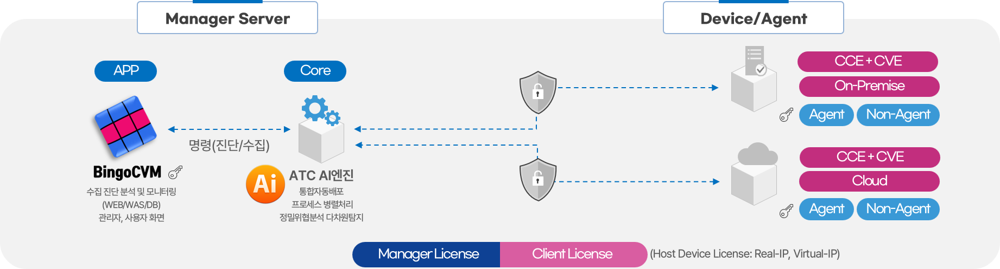

도입효과 및 핵심 기능
BingoCVM은 제로트러스트 취약점 진단 엔진과 유연한 관리 기능으로 최상의 보안 관리 효율성을 제공합니다.
- BingoCVM은 시스템 취약점진단을 자동화(스케줄 관리)하여 담당자의 업무시간을 단축시켜줍니다.
- 조치 관리를 통해서 누가 언제 조치를 어떻게 했고 조치 관련 증빙 자료를 업로드해서 관리할 수 있습니다.
- 초기 진단과 조치 이후 진단 내역을 비교하는 비교 보고서 다운로드가 가능합니다.
- 온프레미스에서 클라우드 시스템까지 모두 하나의 플랫폼 BingoCVM에서 취약점진단이 가능합니다.
- 진단 대상: Unix/Linux 서버, Windows 서버, PC, 웹, DBMS, Network, 가상화, 클라우드 플랫폼의 취약점 항목을 자동 스케줄 진단할 수 있습니다.
5단계 체계적 취약점 진단 프로세스
BingoCVM의 취약점 진단 프로세스는
체계적이고 단계적인 접근으로 빠짐없는
취약점관리를 실현합니다.
취약점 진단 주요단계는 자산등록, 취약점진단, 취약점분석,
취약점조치, 이행점검으로 이루어집니다.
- 모든 IT 자산을 Agent 또는 Non‑Agent 방식으로 식별하여 등록
- CCE 진단 스크립트를 자동으로 배포·실행하고 결과 파일을 수집
- CVE 기반 자산 자동 매핑으로 스캔 결과를 통합 수집 (2026년 적용)
- 수집된 CCE 시스템취약점진단 결과를 분석하여 항목을 취약 / 양호 / 예외로 분류
- CVE 소프트웨어 취약점 기반 AI 분석을 통해 취약점에 대한 정밀 분석 수행 (2026년 적용)
- 발견된 취약점에 대해 수동 또는 자동으로 조치 수행
- 조치 이력과 증적 자료를 체계적으로 저장
- 조치 완료 후 재진단을 수행하여 이행 여부를 검증
- 최종 진단 보고서 및 비교 보고서 제공 (다운로드 가능)
CCE 시스템취약점과 CVE 소프트웨어취약점
BingoCVM은 CCE(시스템 취약점)와
CVE(소프트웨어 취약점) 두 가지 유형을 통합 진단합니다.
설정 오류부터 알려진 버그까지, 하나의 플랫폼에서 모두 관리합니다.
- 전자정부, 공공기관 대상
- 서버/네트워크/DB/보안장비 점검 항목 제공
- 항목 구조는 CCE 개념과 유사 (설정 기반 점검)
- 계정관리
- 접근통제
- 로그관리
- 암호정책
- CVE 의미: 소프트웨어 결함
- CVE 대상: 소프트웨어 제품 코드 취약점
- CVE 약점: 해커가 직접 공격 가능
- CVE 해결: 소프트웨어 취약점 점검 및 패치
- 실제 공격 가능한 코드 취약점
-
형식: CVE-연도-번호
예: CVE-2024-12345 - CVSS 점수와 연계 (위험도 평가)
CVE-2021-44228Apache Log4j의 Log4Shell 원격 코드 실행 취약점
CVE-2017-0144Microsoft Windows SMB 취약점 (WannaCry 악용)
시스템 구성
BingoCVM의 시스템은 Manager Server(App + Core)와 Device/Agent(Client License)로 구성됩니다. 온프레미스/클라우드 모두 자동진단 방식을 Agent + Non-Agent(기본) 모두 지원합니다.

지원 플랫폼
BingoCVM은 KISA 취약점점검 가이드 기준으로 고객사의 다양한 시스템 환경에 맞춰 최적화된 진단 서비스를 제공합니다. 온프레미스부터 클라우드까지 폭넓은 지원 범위를 자랑합니다.
- Windows Server: 2003 R2, 2008 ~ 2022
- Windows PC: 7, 8, 10, 11, Mac PC
- Linux: RHEL, CentOS, Ubuntu, Rocky, Debian, Amazon Linux 등
- Unix: HP-UX(11+), AIX(5.2+), Solaris(5.8+)
- Virtualization: ESXi, Hyper-V, KVM, Docker, Kubernetes(Master/Worker)
- RDBMS: Oracle, MySQL, MSSQL, MariaDB, PostgreSQL, Tibero, Cubrid
- NoSQL: MongoDB, Redis, Elasticsearch
- Cloud Platform: AWS, Azure, GCP, KT Cloud, Naver Cloud 등
- Cloud Infra: VM, Container, K8S, Cloud DB, OpenStack, Hadoop
- WEB: Apache, IIS, Nginx, WebtoB
- WAS: Tomcat, Jeus, WebSphere, WebLogic, JBoss
- Network: Cisco, Juniper, Alteon 등 스위치/라우터
- Security Device: Firewall, IPS, VPN, DDoS (매뉴얼 진단 지원)
기능 및 특장점
BingoCVM은 정보통신기반시설 및 클라우드 시스템 취약점진단 자동화를
제공합니다.
시스템 취약점 진단/평가/분류/조치/이력/보고서까지 편리한 서비스를
제공합니다.